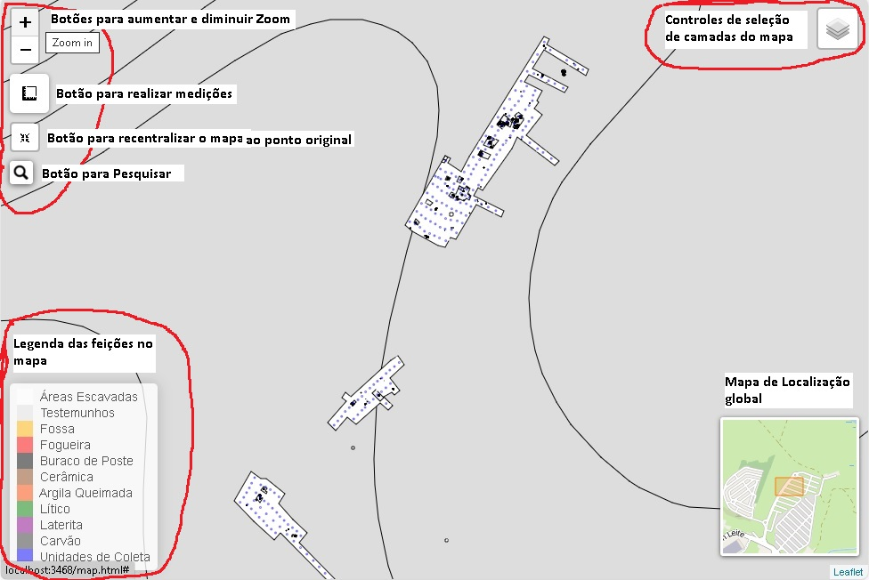
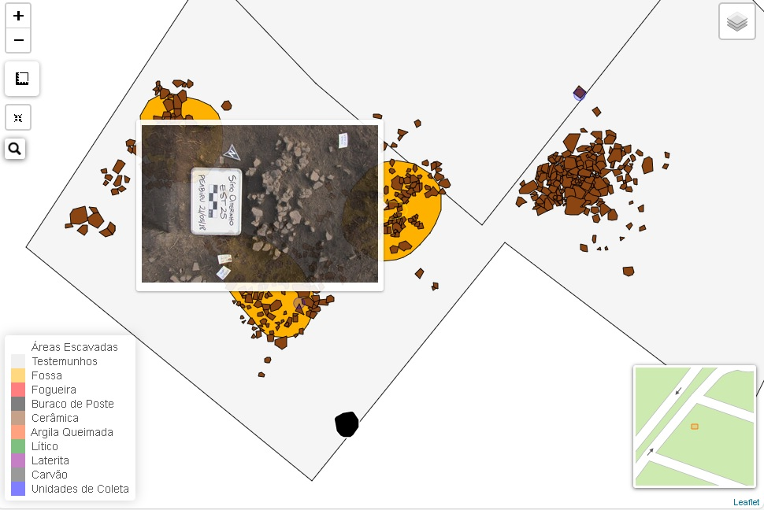
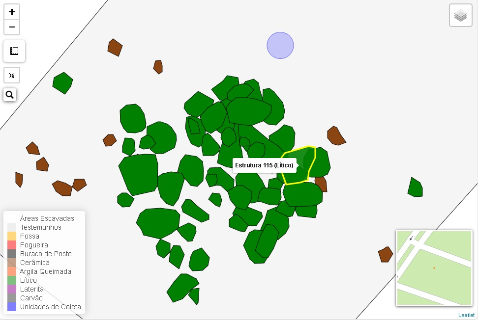
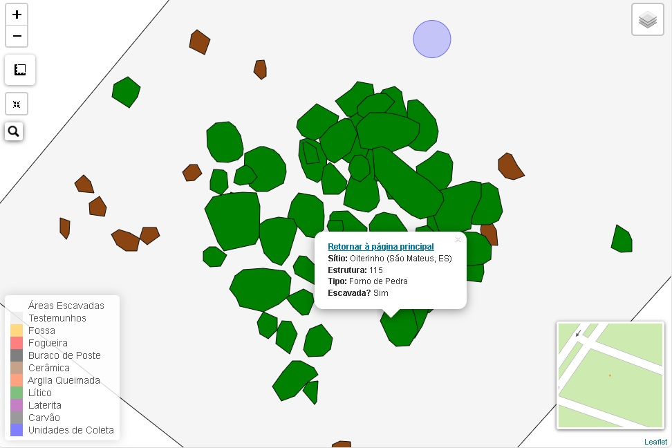
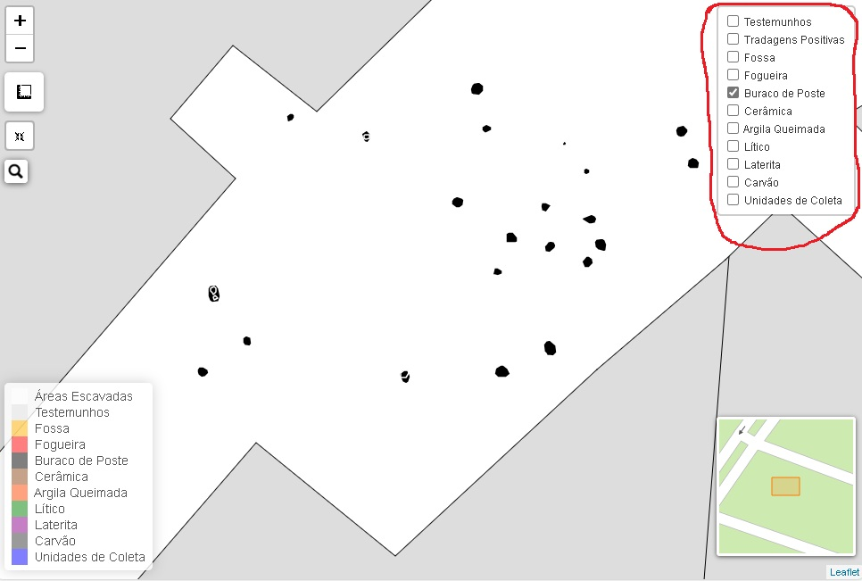
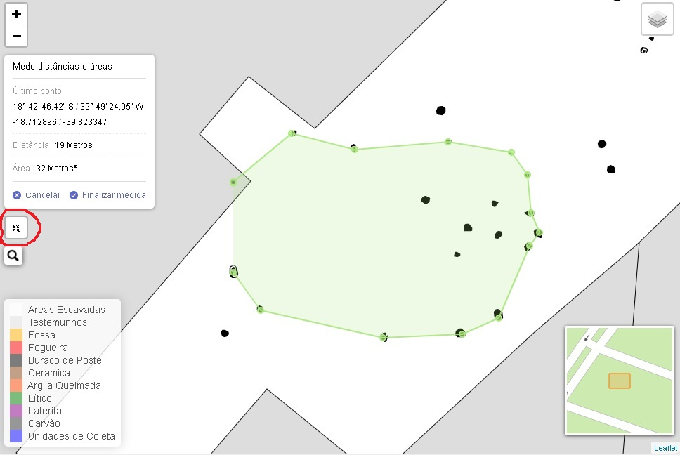
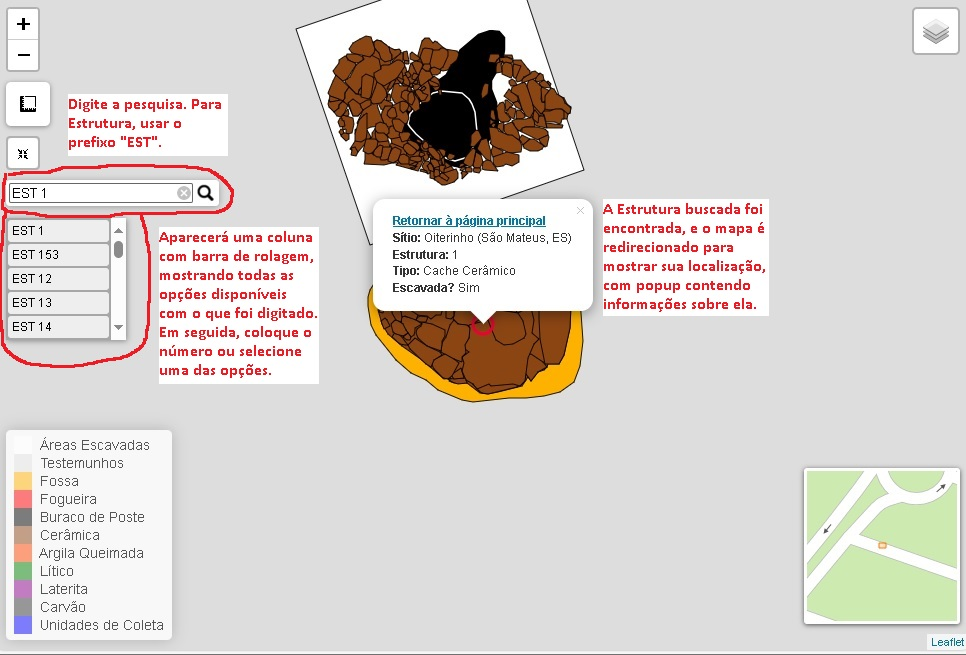

Instruções de Uso
A seguir, apresentamos algumas instruções sobre as funcionalidades do Web Map e como realizar consultas no mesmo.
Instruções Gerais
O Web Map do sítio oiterinho é uma ferramenta que possibilita vizualizar todo o layout de escavação, verificar a localização de cada estrutura em relação às demais, visualizar fotografias de topo de cada estrutura, e efetuar consultas. Também é possível usar os controles do mapa para retirar ou selecionar camadas específicas do mapa, para então observar a distribuição de estruturas por tipo.
Elementos e funcionalidades do Web Map
O mapa digital apresenta dois principais paineis de controle (Figura 1). No canto superior esquerdo, é possível realizar as seguintes operações: 1) Utilizar o Zoom para aproximar ou afastar a visualização (também feito com o botão de rolagem do Mouse); 2) Realizar medições de distância e área; 3) Recentralizar o mapa para a escala original quando foi aberto; 4) Efetuar pesquisas das unidades de escavação do sítio Oiterinho (Estruturas, Unidades de Coleta, Poços-Teste, Áreas de Decapagem Mecãnica e Tradagens).

Além dos controles do mapa, há também uma legenda situada no canto inferior esquerdo (Figura 1), onde é possível verificar as cores de cada tipo de feição representada. No canto superior direito, o usuário pode visualizar a localização de cada parte do sítio em relação a um pequeno mapa de localização global (Figura 1).
Ao aproximar de uma estrutura, passe o Mouse sobre o centro da mesma, e então um popup é aberto com uma imagem do topo da estrutura (Figura 2). No caso das Estruturas 1 e 21, que são caches cerâmicos com diferentes etapas da escavação registrada2, a imagem mostrada no popup é um Gif que exibe diferentes fotos das subsequentes etapas da escavação. Todas as estruturas possuem imagens de topo associadas a elas.

Se o usuário passar o mouse sobre cada elemento representado no mapa, a ferramenta dá informações sobre aquela feição específica (Figura 3). No caso demonstrado noa Figura 3, o mapa exibe seu número de identificação de estrutura, além da tipologia específica daquela feição (lítico).

Quando cada um dos elementos do mapa é clicado, a ferramenta abre um outro popup com informações gerais sobre aquela estrutura (Figura 4). No caso específico demosntrado na Figura 4, o popup exibe informações sobre a tipologia geral da estrutura, que é um forno de pedra composto por um conjunto de pedras e fragmentos cerâmicos.No popup aberto com as informações da estrutura, também há um link retornar à página inicial, que o usuário poderá clicar para voltar a esta homepage do Web Map.

No canto superior direito, o usuário pode utilizar o controle de seleção de camadas para filtrar a exibição das mesmas(Figura 5). Clique sobre o ícone para mostrar as opções de seleção. O usuário pode remover e selecionar tipos de camadas específicas, ou as estruturas de acordo com a sua tipologia. No exemplo demonstrado da Figura 5, foram retiras todas as camadas selecionáveis, para exibir apenas as estruturas de buracos de poste, facilitando assim a visualização dos padrões de alinhamento entre elas.

Uma outra ferramenta importante é o controle de medições, situado no canto superior direito (Figura 6). Com ele, o usuário pode fazer medições de distâncias e áreas, com unidades em metros quadrados. O usuário pode clicar em “Finalizar Medida”, deixando esta registrada no mapa, com um popup aberto exibindo as informações. Caso nãpo haja mais interesse em visualizar aquela medida, basta clicar em Excluir.

Dado um panorama geral da aplicação Web Map, passamos agora para instruções de como pesquisar unidades de escavação específicas, sejam elas Estruturas, Unidades de Coleta, Poços-Teste, Tradagens ou Áreas de Decapagem Mecânica.
Como fazer pesquisas?
Para realizar pesquisas no Web Map, clique sobre o ícone com uma lupa, o último situado no canto superior direito do mapa. A barra de busca será aberta, e então o usuário pode digitar o texto respectivo à unidade de escavação específica que está buscando. No caso de uma estrutura, o usuário deverá utilizar o prefixo EST, seguido do respectivo número da estrutura a ser encontrada (Clique aqui para ver a lista e prefixos de todas as unidades de escavação).
Ao fazer a digitação, a barra de pesquisa abrirá uma coluna com barra de rolagem, indicando todos os dados contidos no mapa que tenham uma estrutura, seguida do seu respectivo número (Figura 7). Caso o usuário digite EST 1, a barra de rolagem mostrará todas as estruturas cujo número começa com 1, sendo por exemplo a Estrutura 1, as Estruturas de 10 a 19, e as Estruturas de 100 até 199. O mesmo acontecerá se o usuário digitar EST 2, onde a barra de busca mostrará resultados das Estruturas 2, Estruturas de 20 a 29, e as Estruturas de 200 a 233.

Abaixo constam informações breves de como realizar a pesquisa por cada unidade de escavação.
Pesquisar por Estrutura
1. Clique sobre o ícone da lupa, no canto superior direito, para abrir a barra de pesquisa.
2. Digite o prefixo EST, seguido de um espaço e do número da estrutura desejada. Caso a estrutura seja subdivididade em A e B (algumas poucas estruturas tem esta subdivisão), digite a letra correspondente (ex: EST 44A). Clique aqui para consultar a lista de todas as estruturas.
3. A barra de pesquisa abrirá uma coluna indicando sugestões das estruturas contidas no mapa.
4. Após digitar a informação da estrutura desejada, aperte enter ou clique sobre a lupa na barra. Caso a informação digitada esteja correta, o mapa será redirecionado com um Zoom para o local da estrutura, e abrirá um popup exibindo informações sobre ela. Se a informação estiver incorreta, aparecerá uma mensagem: Informação não encontrada.
5. Alternativamente, o usuário poderá clicar sobre uma das sugestões indicadas na coluna com barra de rolagem.
Pesquisar por Unidade de Coleta
1. Clique sobre o ícone da lupa, no canto superior direito, para abrir a barra de pesquisa.
2. Digite o prefixo UC, seguido do número da estrutura desejada (Sem espaço). No caso das UCS,alguns dos números incluem zeros à esquerda (exemplos: UC001, UC008, UC015, UC099). Clique aqui para consultar a lista de todas as Unidades de Coleta.
3. A barra de pesquisa abrirá uma coluna indicando sugestões das Unidades de Coleta contidas no mapa.
4. Após digitar a informação da Unidade de Coleta desejada, aperte enter ou clique sobre a lupa na barra. Caso a informação digitada esteja correta, o mapa será redirecionado com um Zoom para o local da Unidade de Coleta, e abrirá um popup exibindo informações sobre ela. Se a informação estiver incorreta, aparecerá uma mensagem: Informação não encontrada.
5. Alternativamente, o usuário poderá clicar sobre uma das sugestões indicadas na coluna com barra de rolagem.
Pesquisar por Poço Teste
1. Clique sobre o ícone da lupa, no canto superior direito, para abrir a barra de pesquisa.
2. Digite o prefixo PT, seguido de espaço e do número do Poço-Teste desejado. (exemplos: PT 1, PT 2, PT 3 ou PT 4). Clique aqui para consultar a lista de todos os Poços-Teste.
3. A barra de pesquisa abrirá uma coluna indicando sugestões dos Poços-Teste contidos no mapa.
4. Após digitar a informação da Unidade de Coleta desejada, aperte enter ou clique sobre a lupa na barra. Caso a informação digitada esteja correta, o mapa será redirecionado com um Zoom para o local o Poço-Teste, e abrirá um popup exibindo informações sobre ele. Se a informação estiver incorreta, aparecerá uma mensagem: Informação não encontrada.
5. Alternativamente, o usuário poderá clicar sobre uma das sugestões indicadas na coluna com barra de rolagem.
Pesquisar por Área aberta por Decapagem Mecânica
1. Clique sobre o ícone da lupa, no canto superior direito, para abrir a barra de pesquisa.
2. Digite o prefixo Área (O Á deve ter obrigatoriamente acento), seguido de espaço e do da Área desejada. (exemplos: Área 1, Área 2, Área 3 ou Área 4). Clique aqui para consultar a lista de todos as áreas abertas com decapagem mecânica.
3. A barra de pesquisa abrirá uma coluna indicando sugestões das Áreas contidas no mapa.
4. Após digitar a informação da Área de Decapagem Mecânica desejada, aperte enter ou clique sobre a lupa na barra. Caso a informação digitada esteja correta, o mapa será redirecionado com um Zoom para o local da Área de escavação, e abrirá um popup exibindo informações sobre ela. Se a informação estiver incorreta, aparecerá uma mensagem: Informação não encontrada.
5. Alternativamente, o usuário poderá clicar sobre uma das sugestões indicadas na coluna com barra de rolagem.
Pesquisar por Tradagem
1. Clique sobre o ícone da lupa, no canto superior direito, para abrir a barra de pesquisa.
2. Digite o prefixo Tradagem, seguido de espaço e do número da Tradagem desejada (ex: Tradagem 96). É importante ter em mente que o mapa inclui apenas as 81 tradagens que tiveram resultado positivo para a presença de vestígios arqueológicos. Clique aqui para consultar a lista de todas as Tradagens positivas.
3. A barra de pesquisa abrirá uma coluna indicando sugestões das Tradagens positivas contidas no mapa.
4. Após digitar a informação da Tradagem desejada, aperte enter ou clique sobre a lupa na barra. Caso a informação digitada esteja correta, o mapa será redirecionado com um Zoom para o local da Tradagem, e abrirá um popup exibindo informações sobre ela. Se a informação estiver incorreta, aparecerá uma mensagem: Informação não encontrada.
5. Alternativamente, o usuário poderá clicar sobre uma das sugestões indicadas na coluna com barra de rolagem.
Footnotes
Barreto, B. D. S., & Pereira, D. (2024). WebMap do sítio arqueológico Oiterinho, São Mateus/ES. (Version 2.0) [Computer software]. https://doi.org/10.5281/zenodo.10790334↩︎
Todas as estruturas tiveram diferentes etapas da escavação registradas com fotografias de topo, porém apenas as estruturas 1 e 21 contém um Gif exibindo estas diferentes etapas.↩︎
Barreto, B. D. S., & Pereira, D. (2024). WebMap do sítio arqueológico Oiterinho, São Mateus/ES. (Version 2.0) [Computer software]. https://doi.org/10.5281/zenodo.10790334↩︎
Barreto, B. D. S., & Pereira, D. (2024). WebMap do sítio arqueológico Oiterinho, São Mateus/ES. (Version 2.0) [Computer software]. https://doi.org/10.5281/zenodo.10790334↩︎
Barreto, B. D. S., & Pereira, D. (2024). WebMap do sítio arqueológico Oiterinho, São Mateus/ES. (Version 2.0) [Computer software]. https://doi.org/10.5281/zenodo.10790334↩︎
Barreto, B. D. S., & Pereira, D. (2024). WebMap do sítio arqueológico Oiterinho, São Mateus/ES. (Version 2.0) [Computer software]. https://doi.org/10.5281/zenodo.10790334↩︎
Barreto, B. D. S., & Pereira, D. (2024). WebMap do sítio arqueológico Oiterinho, São Mateus/ES. (Version 2.0) [Computer software]. https://doi.org/10.5281/zenodo.10790334↩︎
Barreto, B. D. S., & Pereira, D. (2024). WebMap do sítio arqueológico Oiterinho, São Mateus/ES. (Version 2.0) [Computer software]. https://doi.org/10.5281/zenodo.10790334↩︎